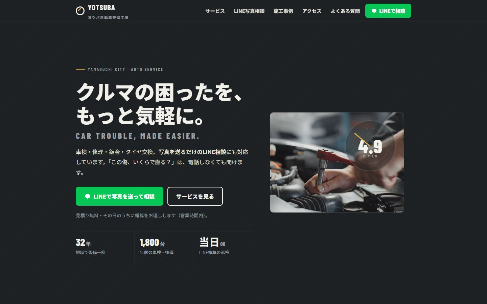
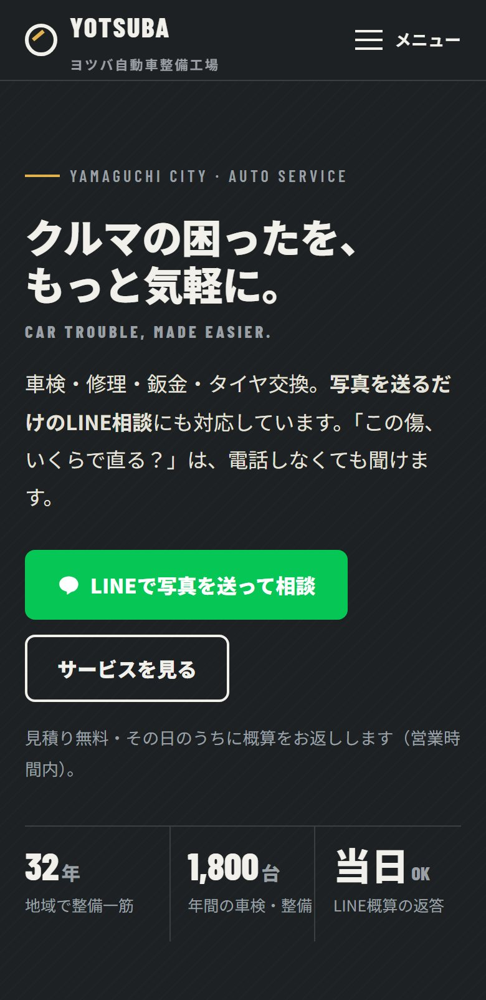

AUTO ／ 自動車整備・鈑金
「この傷、いくらで直る？」を
LINEで相談できる整備工場へ。
地域の整備工場を「電話しないと何も分からない店」から「スマホから気軽に相談できる店」へ。車検・修理・鈑金・タイヤ交換。写真を送るだけのLINE相談を、サイトの主役に据えます。
- 課題
- 電話中心で、若い顧客が修理の相談をしにくい。「まず見積りを聞く」のハードルが高い。
- 提案
- LINE写真相談を中心にした、スマホファーストのサイト。よくある相談（ぶつけた・傷の値段・車検・警告灯）から入れる構成。
- POINT
- Webサイトを新しくするのではなく、問い合わせ方法そのものを変える。
車の傷をスマホで撮影→LINEで写真を送信→概算・来店案内→来店
デザイン：ダークグレー／オフホワイト。太めの文字で、工場の技術感と安心感。黒＋赤＋炎の"車屋らしさ"は使いません。
デモサイトを見る →
架空の整備工場「ヨツバ自動車整備工場」